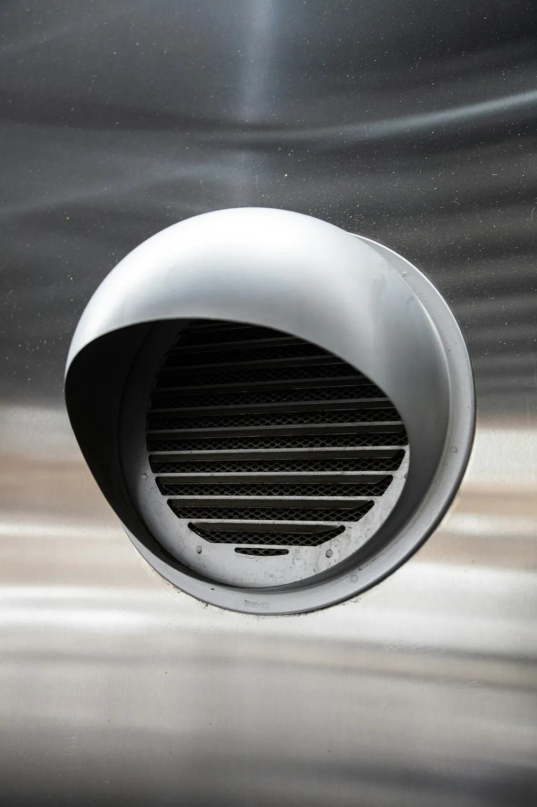

A blocked dryer vent is one of the most overlooked fire risks in a San Antonio home. We clear the full vent line, not just the lint trap, so your dryer runs safer and faster.

Dryer vent cleaning in San Antonio clears lint and debris out of the full exhaust line that runs from your dryer to the outside wall or roof, not just the trap you empty after every load. Most homeowners assume cleaning the lint trap is enough, but lint builds up steadily inside the actual duct run, and in homes with long vent runs or multiple bends, that buildup can restrict airflow enough to become a real fire hazard.
We disconnect the vent line at the dryer, then run a rotary brush or compressed-air tool through the entire duct run from the connection point to the exterior vent cover. A shop vacuum or negative-air system pulls the loosened lint out as we go, and we check the exterior vent hood to make sure the flap opens freely and isn’t blocked by a bird nest or debris, which is common on homes near mature trees.
Get it checked if a load of laundry regularly needs a second cycle to fully dry, if the dryer or the room it’s in feels noticeably hotter than normal during a cycle, if you smell anything like burning lint, or if you’ve lived in the home more than a year without ever having the vent professionally cleaned. Homes with long vent runs through an attic, which is common in San Antonio’s single-story ranch layouts, tend to accumulate lint faster than short, straight runs.
Lint traps only catch a portion of the lint each cycle produces — the rest travels down the vent line and settles wherever the airflow slows down, usually at bends or low points in the duct. Longer runs and vents with more than two bends trap noticeably more lint over time, and vinyl or foil accordion-style ducting (common in older San Antonio homes) traps lint in its ridges far more than rigid metal duct does.
Standalone dryer vent cleaning runs $89 to $150 in most San Antonio homes. The main factors are the length of the vent run, how many bends it has, and whether the exterior vent cover is easy to reach or requires ladder access on a two-story exterior wall. Bundling it with an air duct cleaning appointment typically brings the add-on price down to $49 to $79 since the crew and equipment are already on site.
Rigid metal duct is the safer, more fire-resistant option and is standard in most homes built or updated in the last 15 years. Flexible vinyl or foil ducting was common in older construction and traps lint more easily in its ribbed interior, which means homes with that older ducting often benefit from more frequent cleaning — sometimes annually instead of every other year. If your vent line is still flexible vinyl, we’ll flag it during the visit since replacing it with rigid metal is a straightforward upgrade that meaningfully cuts fire risk.
If clothes take longer than one cycle to dry, the dryer feels hotter than usual to the touch, you notice a burning smell during a cycle, or you can’t remember the last time the vent was cleaned, it’s time to have it checked. A vent that’s more than 50% blocked with lint is a genuine fire risk, not just an efficiency problem.
Standalone dryer vent cleaning in San Antonio typically runs $89 to $150, depending on the vent’s length and how it’s routed through the house. If you bundle it with an air duct cleaning appointment, the add-on price usually drops to $49 to $79 since we’re already on site with the vacuum equipment set up.
A standard single dryer vent line takes about 30 to 60 minutes to clean thoroughly. Longer vent runs, vents with multiple bends, or exterior vent covers that are hard to access can add extra time.
Yes. Lint is highly flammable, and a blocked vent traps heat inside the dryer and duct line instead of venting it outside. Failure to clean the dryer vent is one of the most commonly cited factors in residential dryer fires, which is why we recommend annual checks even for households that don’t notice any obvious symptoms.